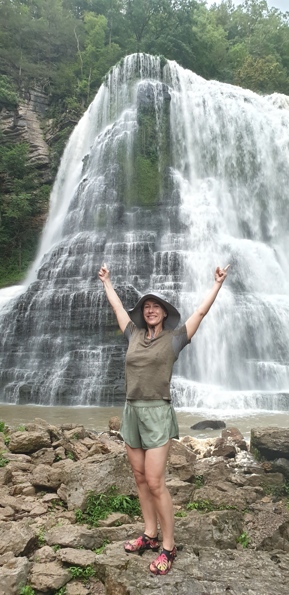

Life in Motion
JOASILITY
Travel • Nature • Movement • Curiosity
Exploring journeys, nature, movement, and simple living.
Travel. Nature. Curiosity.
A personal exploration project with journeys at the center.
Joasility follows paths near and far: quiet local walks, mountain weekends, larger travel stories, wildlife observations, simple meals, movement, and reflections from life outdoors.
Journeys
The heart of Joasility.
Three paths of exploration: local walks, weekend escapes, and journeys farther afield.
YouTube Playlists
Watch by theme.
Video collections organized around Joasility journeys, movement, nature, food, and future stories.
Nature & Wildlife
Encounters with the small, wild, and easily missed.
Birds, plants, insects, reptiles, ecosystems, and quiet observations from walks, trails, parks, and travel days.
Movement
Movement as part of an active life.
Yoga, mobility, fitness, senior-friendly movement, and everyday activity that supports travel, walking, and feeling at home in the body.
Nutrition
Simple food for days in motion.
Practical meals, homemade food, trail-friendly ideas, and recipes that fit active, curious living.
Reflections
Thoughts gathered along the way.
Short essays, travel reflections, nature notes, observations, and life philosophy.

About
Hi, I'm Joanna.
I spent most of my life in Poland before moving to North Carolina in my fifties.
I enjoy traveling, hiking, cycling, diving, photography and spending time in nature. Over the years I have explored more than 30 countries, from mountain trails and deserts to historic cities and remote places far from the usual tourist routes.
Joasility is where I collect some of those experiences through photos, videos and notes.
You will also find movement, simple recipes and everyday moments that help me stay healthy and active. Not because fitness is the goal, but because I want to keep exploring the world for as long as possible.
I am not trying to be an expert, influencer or travel guide.
I am simply sharing things I find interesting, beautiful, useful or worth remembering.
If any of it inspires someone to go for a walk, take a trip, try something new or look a little closer at the world around them, that's a nice bonus.
Welcome to Joasility.
Contact
Follow the journey.
For questions, collaborations, or a simple hello, reach out by email or connect on social media.
joasility@gmail.com